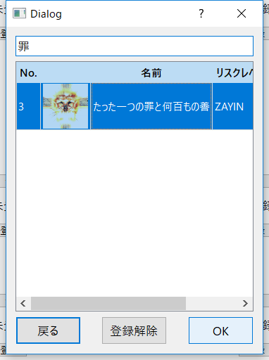

収容しているアブノーマリティを登録する
1. 「アブノーマリティ」ウィンドウで収容位置の「登録」ボタンを押す
2. アブノーマリティ名を検索（日/英可）し、選択して「OK」ボタンを押す

アブノーマリティ登録を解除する
1. 「アブノーマリティ」ウィンドウで収容位置の「登録」ボタンを押す
2. 「登録解除」ボタンを押す
作業を必ず割り当てたいアブノーマリティをマークする
1. 収容位置の「★」ボタンを押すと、ポートレートに★マークが表示されStarされる
※Starされたアブノーマリティに作業が割り当たっていない状態でメモを生成しようとすると警告を表示する